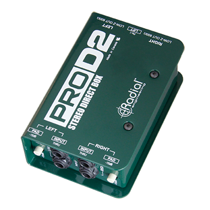
Passive DI
ProD2
Stereo Passive Direct Box
The ProD2 is a 2-channel passive direct box designed to connect stereo keyboards or high output instruments to a PA system or home recording setup without noise or distortion.
Our Gear
Browse available Radial direct box rental inventory from VD Audio Rental for touring, theatre, live production, and professional audio applications.
Filter available Radial direct boxes by type below and contact us for availability, production support, and quote requests.
Request a QuoteSelect a category to view available Radial options.

Passive DI
Stereo Passive Direct Box
The ProD2 is a 2-channel passive direct box designed to connect stereo keyboards or high output instruments to a PA system or home recording setup without noise or distortion.
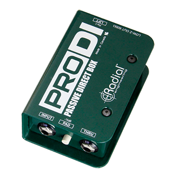
Passive DI
Passive Direct Box
The ProDI is a passive direct box designed for use on stage or in home recording studios, with the ability to handle high output instruments without distortion, and a transformer-isolated output to eliminate noise from ground loops.
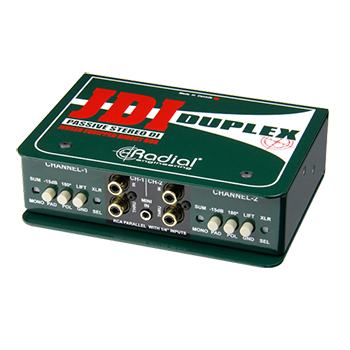
Passive DI
Premium Stereo Passive DI
The JDI Duplex is a high performance 2-channel passive direct box designed for enhanced connectivity for any application, with numerous input connector types and premium Jensen transformers for exceptional audio performance.
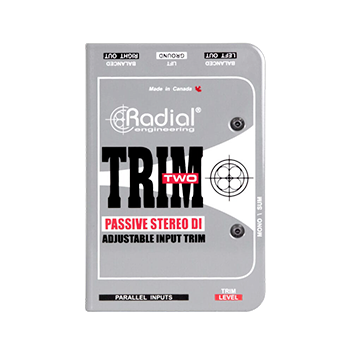
Passive DI
Passive Stereo Direct Box
The Radial Trim-Two is a passive direct box, designed for use with laptop computers and other consumer type devices where the user has a requirement for a 'ready access' volume control for quick adjustments on stage.
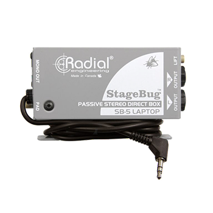
Passive DI
Piezo Direct Box
The StageBug SB-5 is a compact passive direct box built for acoustic instruments with piezo pickups, using a transformer-isolated design to tame the harsh, brittle tone piezos are prone to while eliminating hum and buzz from ground loops.
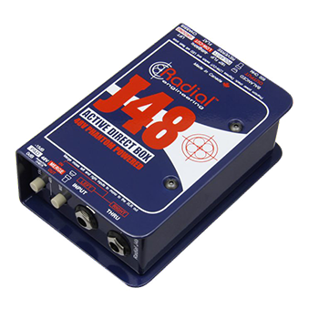
Active DI
Premium Active DI
The J48 is a high performance active direct box for live concert touring and professional recording studio applications, with the ability to handle extreme transients without distortion while delivering the natural sound of your instrument.
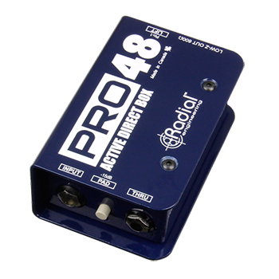
Active DI
Active Direct Box
The Pro48 is an active direct box designed for use on stage or in home recording studios, with exceptional signal handling for use with both active and passive instruments.
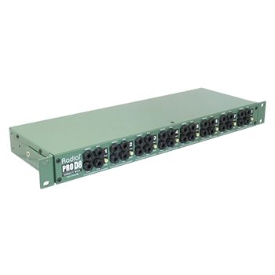
Rackmount DI
Passive 8-Channel Rackmount Direct Box
The ProD8 is a high performance 8-channel passive direct box optimized for keyboard rigs in professional touring, with redundant 1/4″ inputs for each channel and a completely passive design that requires no power to operate.
Rackmount DI
J-Rak 4 4-space Rack Adapter
Most Radial direct boxes, splitters, isolators and Reampers may be rack-mounted using either the J-Rak 4™ or the J-Rak 8™. These enable multiple units to be combined and safely stored for touring or used as part of a permanent installation. Mounting the DIs is easy. You simply remove the outer shell and slide the inner frame into one of the racks.
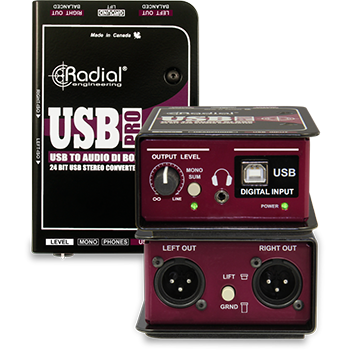
USB
USB Direct Box
The USB-Pro is a two-way USB direct box that lets you connect an instrument or line-level signal to a computer while simultaneously bringing computer audio back to the stage, with a built-in DI and headphone output for silent monitoring.
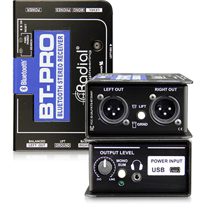
Bluetooth
Bluetooth Direct Box
The BT-Pro® is a Bluetooth direct box that streams audio wirelessly from a phone, tablet, or laptop straight to the PA, combining a stable Bluetooth receiver with a balanced DI output and local 1/8" input for wired backup.
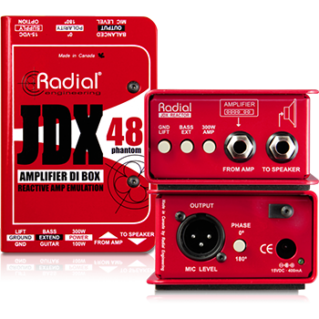
Guitar Amp
Reactor Guitar Amp Direct Box
The JDX-48 is a guitar amp direct box that captures the true sound of an amp and speaker cabinet without the need for a microphone, using Radial's Reactor technology to emulate the interaction between a speaker and cabinet for a natural, mic'd tone straight to the board.

Isolator
Passive Line Isolator
The J-ISO is a passive isolation transformer direct box that eliminates hum and buzz caused by ground loops between audio, video, and computer equipment, using a Jensen transformer to keep the signal clean while breaking the ground connection.

Splitter
Passive Microphone Splitter
The ProMS2 is a passive 2-way microphone splitter that sends an isolated copy of a mic or line signal to a second destination, such as a broadcast truck or recording rig, without loading down the original source or introducing ground loop noise.
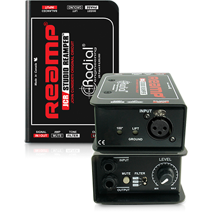
Reamp
Passive Reamp Box
The JCR is a passive reamping device that converts a recorded line-level signal back into an instrument-level signal, letting engineers re-record a DI'd guitar or bass track through an amp with a Jensen transformer for a clean, isolated connection.
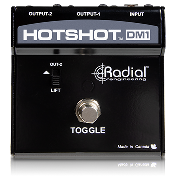
Footswitch
Dual Mute Footswitch
The DM1 is a dual-channel mute footswitch that lets performers silence a mic or instrument signal at the push of a button, with LED status indication and balanced XLR pass-through to keep the signal path clean.